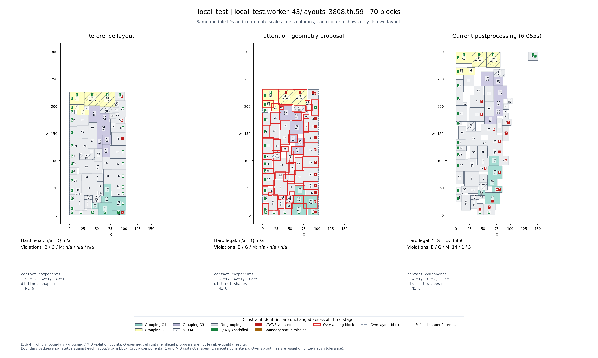
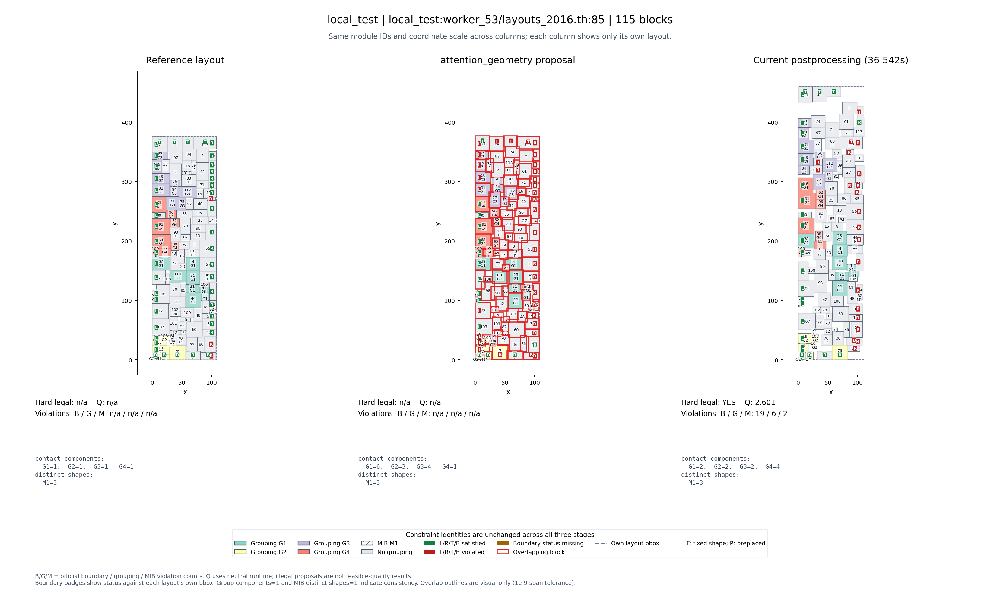
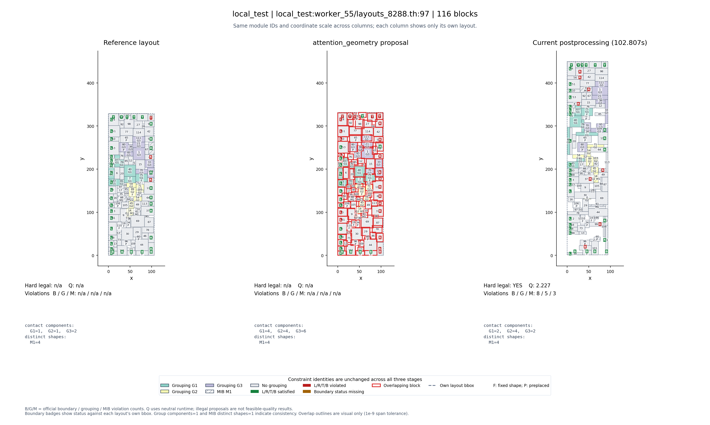
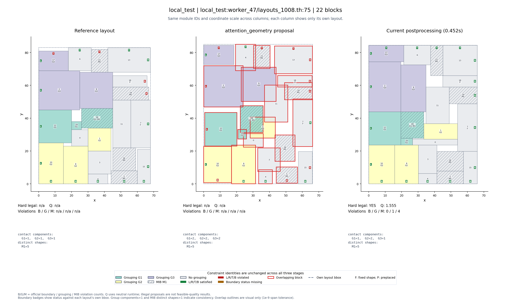
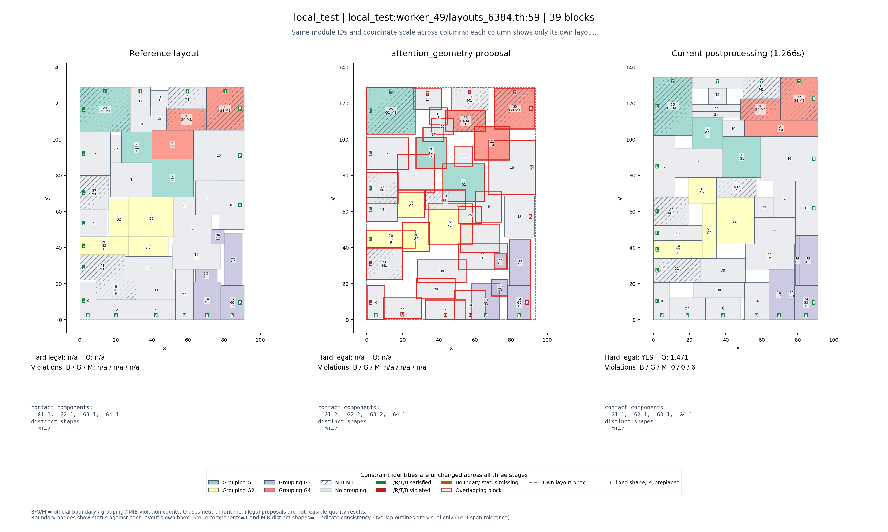

Highest Q: 5 of 41 completed cases
Retrospective diagnostic selection; no new inference.
#1 Q=3.866046 · local_test:worker_43/layouts_3808.th:59

#2 Q=2.601487 · local_test:worker_53/layouts_2016.th:85

#3 Q=2.226895 · local_test:worker_55/layouts_8288.th:97

#4 Q=1.554745 · local_test:worker_47/layouts_1008.th:75

#5 Q=1.471360 · local_test:worker_49/layouts_6384.th:59
